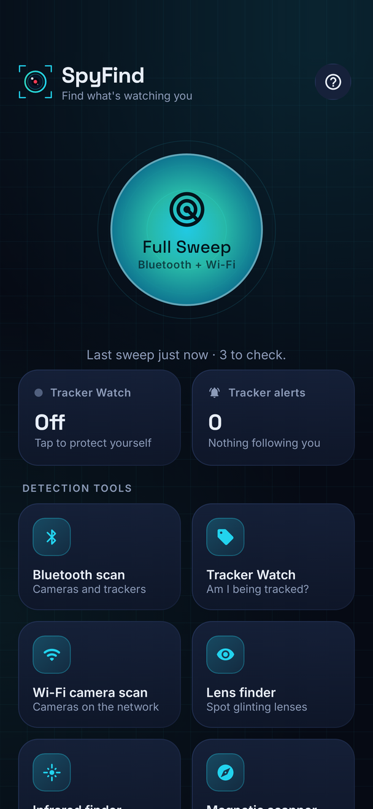
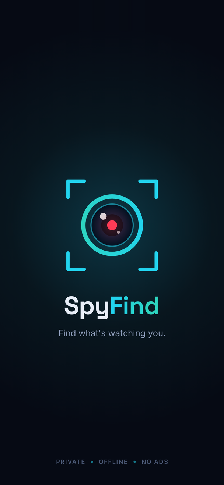
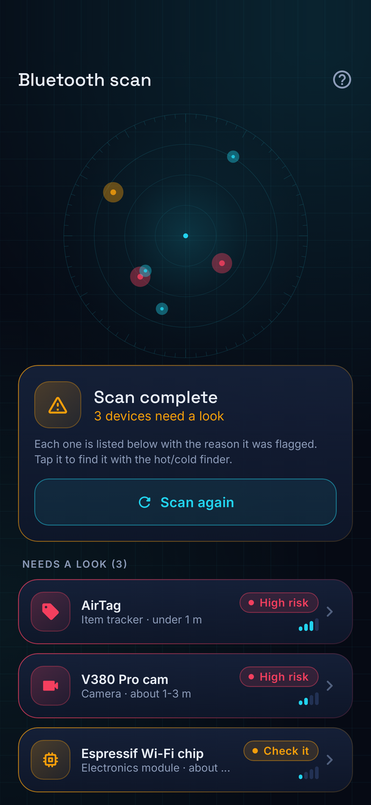
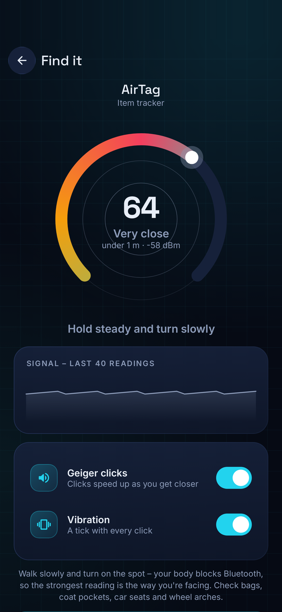
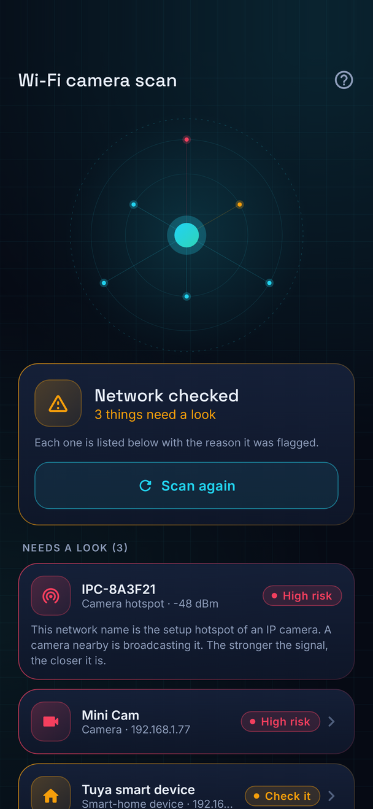
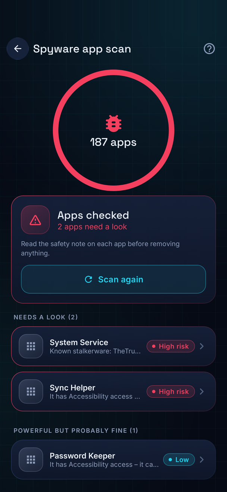
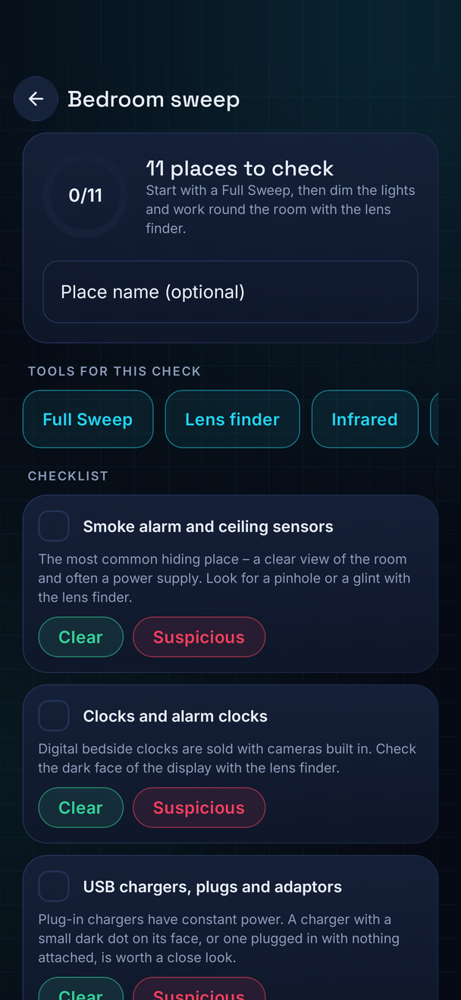
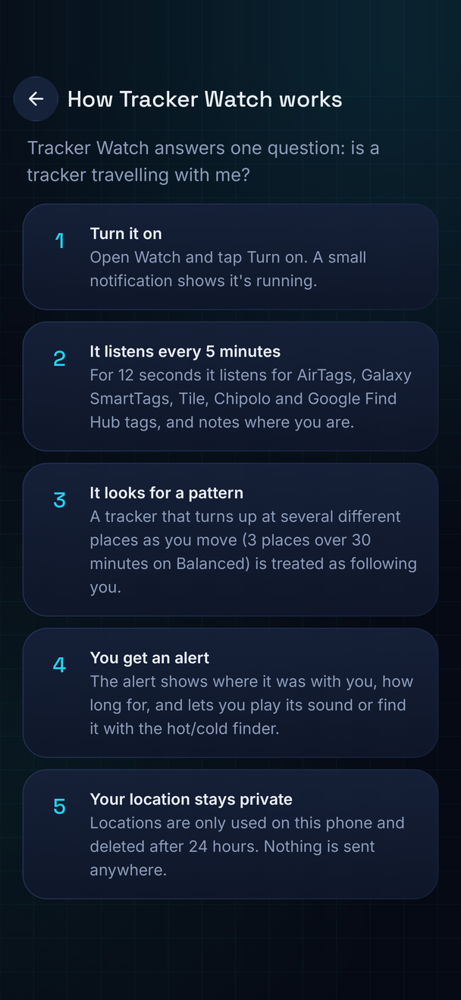
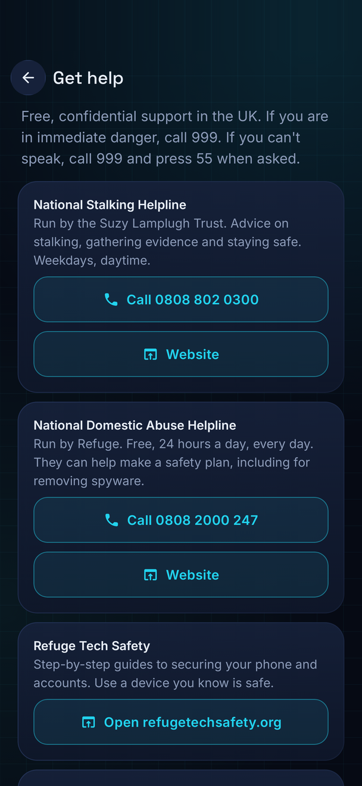
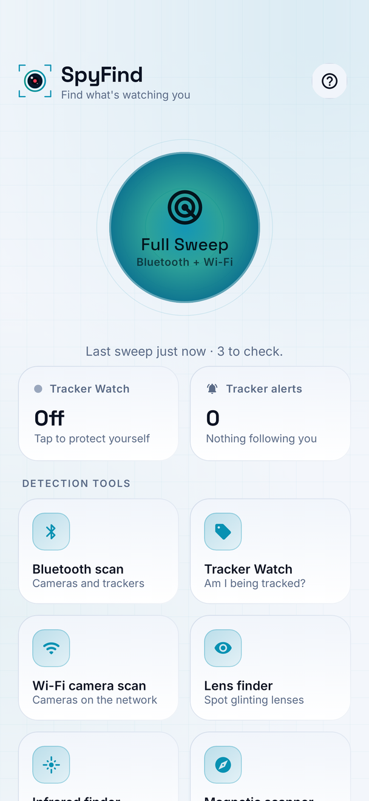

Find what's watching you.
SpyFind checks a room for hidden cameras, tells you which Bluetooth trackers are near you and whether one is travelling with you, and looks for stalkerware on your phone.
Nine tools in one free app, with no adverts, and nothing it finds ever leaves your phone.
Download for AndroidHow to install
- Version 1.0.0
- Android 10 or later
- 4.4 MB
Free, with nothing to unlock. No adverts, no account with the developer, no tracking. Compare or read the release notes.
Chrome may say the file might be harmful. It shows this for app files that do not come from Google Play. Choose Download anyway.

- No advertsNone in the app and none on this site.
- Nothing sent anywhereWhat it finds stays on your phone.
- Everything freeNo subscription, nothing locked.
- No accountNothing to sign up for.
A look inside
These are the real screens, drawn from the app's own code with made-up devices. Swipe or scroll sideways to see them all.









How it works
Three moments: when you arrive somewhere new, while you are out, and when you worry about your phone.
Sweep the room
Tap Full Sweep. SpyFind checks Bluetooth and the Wi-Fi together, then tells you what needs a look and why. Room Sweep walks you round the hiding places.
Let Tracker Watch listen
Switch it on and get on with your day. If the same tracker keeps turning up wherever you go, you get an alert with where it was seen.
Check your phone
Run the spyware app scan. Known stalkerware is named, other risky apps are explained, and help is a tap away if you find something.
Everything is in, and all of it is free
Nothing below is held back for a paid tier, because there is no paid tier. The tools that run in the background are off until you switch them on.
Hidden cameras
- Wi-Fi camera scan
- Finds every device on the Wi-Fi, asks each one what it is, and marks cameras: those that answer camera searches, stream live video or match known camera makers.
- Camera set-up hotspots
- Lists nearby Wi-Fi names that new cameras broadcast while they wait to be set up, with how close each one is.
- Lens finder
- Uses the torch and the camera to pick out the tiny glint of a lens, with a strobe and colour filters to tell a lens from a sequin.
- Infrared finder and magnetic scanner
- See the night-vision lights some cameras use, and find the magnets and coils inside chargers, clocks and smoke alarms.
Trackers
- Know what is near you
- AirTags and other Find My items, Samsung SmartTags, Tile, Chipolo and Google Find Hub tags are named, and SpyFind shows when one is away from its owner.
- Tracker Watch
- Off until you switch it on. Every five minutes it listens briefly and warns you if the same tracker has been with you at several different places.
- Find it and make it ring
- A hot and cold dial with Geiger clicks and vibration, and a button to make an AirTag or Find Hub tag play its sound.
Your phone
- Spyware app scan
- Checks every app against a published list of known stalkerware, by name and by signing certificate, then scores every other app for risky access.
- Camera and mic alert
- Off until you switch it on. Tells you the moment any app turns the camera or microphone on.
- Safety first
- Before anything is removed, SpyFind explains that removing spyware can alert the person who put it there, and points you to help.
Everyday
- Room Sweep
- Bedroom, bathroom, hotel room, rental, living room, changing room, office or car: a checklist of the places cameras are hidden and the tool to use for each.
- Reports and history
- Every scan and sweep is kept on the phone and can be shared as a PDF report.
- Trusted devices
- Mark your own earbuds, watch and router once, and they are never flagged again.
- App lock, widget and tile
- A PIN or fingerprint lock, a home screen widget and a Quick Settings tile for Tracker Watch.
What it finds stays with you
Kept on your phone
Scans, sweeps, alerts and reports stay in the app. There is no account and no SpyFind server.
No ads, no tracking
There is no advertising, analytics or tracking, in the app or on this site.
Location deleted after a day
Tracker Watch only notes where you were so it can spot a pattern, and deletes it after 24 hours.
Only the list is downloaded
The one thing SpyFind fetches from the internet is the updated stalkerware list, from this site. Nothing about your phone is sent.
If you find something
Keep yourself safe first
If you are in danger, call 999. If you cannot speak, call 999 and press 55 when asked.
Think before removing spyware
Removing it can alert the person who installed it. The National Domestic Abuse Helpline, run by Refuge, on 0808 2000 247, free and open all day, every day, can help you plan.
Stalking
The National Stalking Helpline, run by the Suzy Lamplugh Trust, is on 0808 802 0300.
Save the evidence
Photograph what you find, where it was, and share the SpyFind report with the police on 101.
Installing and updating
SpyFind is not on Google Play, so your phone asks a couple of extra questions the first time.
Download the app file
Tap Download on your phone. The file is called SpyFind.apk and is about 4.4 MB. If Chrome says the file might be harmful, choose Download anyway.
Allow the install
Open the file. The first time, Android asks you to allow your browser to install apps. Allow it, go back and tap Install. SpyFind looks at the apps on your phone for the spyware scan, so Google Play Protect may step in: choose More details, then Install anyway.
Updating later
In Settings, Check for updates opens the release notes page. Install the new file over the old one and your history, trusted devices and settings are kept.
Version 1.0.0, released 23 November 2026. See the release notes, or check your download.
Questions
Is SpyFind really free?
Yes. There is no paid version, no subscription and no adverts, and nothing is locked. Every tool is there from the start.
Is it on Google Play?
No. SpyFind is a personal project and is downloaded from this site as an Android app file. It needs Android 10 or later.
Can it find every hidden camera?
No app can. A camera with no wireless, or one that is switched off, sends out nothing to detect. That is why SpyFind gives you several checks, from the network to the lens finder to a checklist for your own eyes. Use more than one.
How does Tracker Watch know I am being followed?
Every five minutes it listens for 12 seconds and notes roughly where you are. If the same tracker turns up at three different places over 30 minutes, it warns you. You can make it more or less sensitive. A tracker that is with its owner is ignored.
Will it flag my own AirTag or earbuds?
An AirTag near its owner's iPhone is not counted as following anyone. For anything else of yours, tap Trust and SpyFind will leave it alone.
Where does my location go?
Nowhere. Tracker Watch keeps the places it noted on your phone and deletes them after 24 hours. You can delete them sooner in Settings.
How does it check for spyware?
It compares every app on your phone with the Echap stalkerware list, a public list of known stalkerware apps and their signing certificates, then scores the rest for powerful access such as reading the screen or notifications. You can update the list from Settings.
Does the Wi-Fi scan work in hotels?
Often not fully. Many hotel and guest networks keep devices apart, so a camera on the same network may not answer. The camera hotspot list, the Bluetooth scan, the lens finder and the room checklist still work.
Does SpyFind interfere with other people's devices?
No. It only listens and asks devices what they are. It never connects to, blocks or switches off anything.
Does it work on an iPhone?
No. SpyFind is for Android phones only.
Who made it?
SpyFind is made by Jonathan Jackson, an independent developer in the United Kingdom.
Sweep it. Know it.
Free, with no adverts and nothing to unlock. Made by the developer of several other free Android apps: see them all.